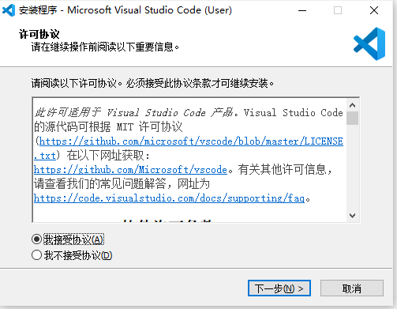

原文连接:https://www.cnblogs.com/mrbug/p/11978765.html
一、为什么选VSCode
这个系列的初宗是带领公司的PHPer转Go，在正式写这篇博文前，咱们先说说Go有哪些主流的IDE
1、GoLand（收费）
JetBrains出品必属精品，除了贵没有其它缺点，如果你用这款IDE，我只想说出门右转，不送！~~~~
2、LiteIDE（免费）
LiteIDE是一个简单的开源IDE。值得注意的是，它是Go语言2012年正式版发布的首个IDE，由Qt开发。由于它是为Golang直接设计的，LiteIDE为开发人员提供了许多有用的功能，包括可配置的构建命令，高级代码编辑器和广泛的Golang支持。其他功能包括代码管理，gdb和Delve调试器，自动完成和使用WordApi的主题，基于MIME类型的系统等等。实际上，新手我一般推荐他用LiteIDE，虽然免费但功能够了，最重要是一键安装，不需要为了配置而分神。但这个Logo啊，我实在爱不起来，颜值即正义。
3、Eclipse（免费）
GoClipse是Eclipse的插件。使用GoClipse插件，开发人员可以利用流行的Eclipse IDE进行编程。Eclipse IDE和GoClipse插件都是免费和开源的。GoClipse编辑器为开发人员提供了广泛的功能，包括源代码编辑器，项目向导和构建器，以帮助报告编辑器内构建的错误，以及功能齐全的GDB调试器支持。大名鼎鼎的Eclipse，从大学时期写JAVA时，我就爱不起来啊！23333
4、Atom（免费）
开发人员可以利用这个Atom IDE改进的语言集成与更智能的编辑器。开源的go-plus软件包使开发人员更容易在Go中进行编程。Atom和go-plus软件包为Golang提供工具，构建流程，linters，vet和coverage工具的支持。其他功能包括自动完成，格式化，测试和文档。使用deve的go-debug包可以添加其他调试功能。Atom+go-plus功能够用，性能还可以，值得出手。
5、Vim（免费）
Vim有许多插件可以帮助开发人员更轻松地编辑他们的Go代码。vim-go插件自动安装所有必要的东西，为Vim中的Go开发人员提供更平滑的集成。Vim-go具有许多有用的功能，包括编译器，改进的语法高亮和折叠，完成支持以及一系列具有集成支持的调试程序。还有一些使用的高级源分析工具，包括：GoImplements，：GoCallees和：GoReferrers。其他vim插件包括用于反馈编译器错误的Syntastic插件，用于Gotags的tagbar插件，用于语法检查的vim编译器插件，甚至用于生成.virmrc配置的vim-bootstrap。说实话，功能强大，该有的都有，性能好得变态，但是快捷键太多了，我是实在记不住，界面嘛用过DOS吗，没错就是白黑加红的那种！
6、VSCode（免费）
它是微软开发的广受欢迎的开源IDE，有一个开箱即用的Go扩展可供VS Code Code使用。vscode-go插件为开发人员提供了更多功能，包括与许多Go工具集成。VS Code通过IntelliSense，内置Git集成，直接从编辑器调试代码等功能提供智能完成功能。VS Code具有高度可扩展性，并通过其许多扩展提供了许多自定义选项。它还提供了几十种语言的支持，这使得它成为了受开发者欢迎的工具。性能吧一般，占用内存有点多，界面完美。而且之前的PHP开发也是用的这个。
二、什么是Go
Go语言（或 Golang）的官网首页有一段话：Go is an open source programming language that makes it easy to build simple, reliable, and efficient software.诚如这句描术：
Go语言具有“部署简单、并发性好、语言设计良好、执行性能好”等优势。它起源于 2007 年，并在 2009 年正式对外发布。
Go语言的主要目标是“兼具 Python 等动态语言的开发速度和 C/C++ 等编译型语言的性能与安全性”。
Go语言它不但能让你访问底层操作系统，还提供了强大的原生网络编程和并发编程支持。很多知名的开源项目用Go实现，例如：Docker、Go-Ethereum、Thrraform 和 Kubernetes。
Go语言是“互联网时代的C语言”。Go 从C语言继承了相似的表达式语法、控制流结构、基础数据类型、调用参数传值、指针等很多思想，还有C语言一直所看中的编译后机器码的运行效率以及和现有操作系统的无缝适配。
Go语言没有类和继承的概念，它和 Java 或 C# 看起来并不相同。但是它通过接口（interface）的概念来实现多态性。
Go语言有一个清晰易懂的轻量级类型系统，在类型之间也没有层级之说。因此可以说Go语言是一门混合型的语言。
三、安装Go
1、下载
打开官网https://golang.google.cn/ 点击 Downloads Go进行，进入下载页后，找到下载的地方如下图：
下面的安装，我会以win10 64 bit及 CentOS7 64 bit做例子，故我分别下载第一项和第三项
2、Windows下安装
双击你下载的安装包（go1.13.4.windows-amd64.msi），一直点击“Next”即可，注意有一步要求选择安装路径，为了后面教程好说明请不要更改。
然后点“Install”安装
这个过程请等待
点击“Finish”完成安装
怎么来验证我们的安装是成功的呢？按windows键+R，输入：cmd回车
在出现的命令行窗口输入：go version回车，这时会显示你当前安装的go版本，说明咱们已经安装成功了
3、CentOS下安装
把刚刚下载的文件（你也可以使用$wget命令下载）移到指定的目录中，我的使用的是/home/roy/go ，打开终端，进入该目录，如图
安装Go， 执行命令
$tar -xvf go1.13.4.linux-amd64.tar.gz
设置环境变量，执行命令
$vim /etc/profile
在文件最后追加（按i键，进入插入模式）
export GOROOT=/home/roy/go/go
export GOPATH=/home/roy/go/gopath
export PATH=$PATH:$GOROOT/bin:$GOPATH/bin
保存，按ESC，再输入:wq回车
测试环境是否成功，重启电脑，在终端上输入：
go version
出现如下图，表示成功
来写个简单的代码试试，创建目录并进入该目录
$cd /home/roy/go/gopath
$mkdir helloworld
$cd helloworld
创建文件main.go
$vim main.go
输入
package main
import "fmt"
func main() {
fmt.Println("Hello, World!")
}
保存，按ESC，再输入:wq回车
执行
$go run ./main.go
成功输出如下图
四、安装VSCode
1、下载
打开官网https://code.visualstudio.com/Download，进入下载页后，找到下载的地方如下图：
win10 64 bit点击第一处红箭头指向处下载，CentOS 64 bit点第二处箭头指向处下载
2、windows下安装
双击你下载的安装程序，然后按下图顺序一路点击

3、CentOS下安装
在官网上下载VSCode的.rpm，得到文件 code-1.40.2-1574694258.el7.x86_64.rpm，把它移动到 /home/roy/VSCode目录下，在终端下进入这个目录
$cd /home/roy/VSCode
执行安装
rpm -ivh code-1.40.2-1574694258.el7.x86_64.rpm
此时报错，如图
执行下面命令：
yum install libXss* -y
成功后，再执行安装
rpm -ivh code-1.40.2-1574694258.el7.x86_64.rpm
安装成功，这时我们可以在应用程序的菜单中找到VSCode了
五、安装VSCode中文包
如果你和笔者一样英文很low，你可以选择安装中文语言包
先可以点左侧第五个图标，或按快捷键Ctrl+Shift+X 打开Extensions，在搜索框里输入：language，中文（简体）的包，然后点“Install”安装，如下图

重新打开VSCode，这时已经是中文的啦
六、安装go插件
打开Extensions，输入go，安装作者Microsoft的这个
七、安装Git工具
1、打开https://git-scm.com/downloads ，选择你系统的安装文件安装
2、下载完成后，如果你的是widows系统，双击安装包一路Next即可，如果你是linux，默认就安装有Git，如果你的没有，请自行百度
八、关于墙的的解决办法
1、设置Goproxy为 https://goproxy.cn
打开命令行执行
go env -w GOPROXY=https://goproxy.cn,direct
2、使用github镜像源
golang 在 github 上建立了一个镜像库，如 https://github.com/golang/net 即是 https://golang.org/x/net 的镜像库
获取 golang.org/x/net 包，其实只需要以下步骤：
git clone https://github.com/golang/net.git
然后把git下来的文件夹拷贝到 $GOPATH/src/golang.org/x 下，以windows为例，即 C:\Users\Administrator\go\src\golang.org/x 下，当然了你也可以先cd到该目录下后，再执行git
3、通过镜像源获得tools
很多go的软件在编译时都要使用tools里面的内容，使用下面方法获取（以windows为例）：
cd \
cd C:\Users\Administrator\go\src\golang.org\x
git clone https://github.com/golang/tools.git
4、gopm 代替go 下载第三方依赖包 （本教程的配置不使用该方法）
可以采用gopm从golang.org一些镜像网站上下载
安装gopm
go get -u github.com/gpmgo/gopm
用gopm get -g代替 go getgopm get
gopm get -g golang.org/x/net
不采用-g参数，会把依赖包下载.vendor目录下面；采用-g 参数，可以把依赖包下载到GOPATH目录中；
九、安装vscode-go
对于Visual Studio Code开发工具，有一款优秀的GoLang插件，它的主页为：https://github.com/microsoft/vscode-go
这款插件的特性包括：
- Colorization 代码着彩色
- Completion Lists 代码自动完成（使用gocode）
- Snippets 代码片段
- Quick Info 快速提示信息（使用godef）
- Goto Definition 跳转到定义（使用godef）
- Find References 搜索参考引用（使用go-find-references）
- File outline 文件大纲（使用go-outline）
- Workspace symbol search 工作区符号搜索（使用 go-symbols）
- Rename 重命名（使用gorename）
- Build-on-save 保存构建（使用go build和go test）
- Format 代码格式化（使用goreturns或goimports或gofmt）
- Add Imports 添加引用（使用 gopkgs）
- Debugging 调试代码（使用delve）
集成安装命令，拷贝到cmd窗口就可完成安装：
go get -u -v github.com/nsf/gocode
go get -u -v github.com/rogpeppe/godef
go get -u -v github.com/golang/lint/golint
go get -u -v github.com/lukehoban/go-find-references
go get -u -v github.com/lukehoban/go-outline
go get -u -v sourcegraph.com/sqs/goreturns
go get -u -v golang.org/x/tools/cmd/gorename
go get -u -v github.com/tpng/gopkgs
go get -u -v github.com/newhook/go-symbols
我们以windows系统来一个一个的举例：
1、进入命令窗口，输入：
go get -u -v github.com/nsf/gocode
安装成功
2、进入命令窗口，输入：
go get -u -v github.com/rogpeppe/godef
安装成功
3、进入命令窗口，输入：
go get -u -v github.com/golang/lint/golint
安装失败，无法安装"golang.org/x/lint/golint"，实事上由于一些众所周知的原因，在中国大陆安装go的包时会经常出错，我们使用第八条中的方法，先安装“golang.org/x/lint/golint”，输入：
git clone https://github.com/golang/lint.git
成功后，再执行
go get -u -v golang.org/x/lint/golint
成功后，重新执行
go get -u -v github.com/golang/lint/golint
安装成功
4、进入命令窗口，输入：
go get -u -v github.com/lukehoban/go-find-references
安装成功
5、进入命令窗口，输入：
go get -u -v github.com/lukehoban/go-outline
安装成功
6、进入命令窗口，输入：
go get -u -v sourcegraph.com/sqs/goreturns
安装成功
7、进入命令窗口，输入：
go get -u -v golang.org/x/tools/cmd/gorename
安装成功
8、进入命令窗口，输入：
go get -u -v github.com/tpng/gopkgs
安装成功
9、进入命令窗口，输入：
go get -u -v github.com/newhook/go-symbols
安装成功
十、测试安装
1、在GoPath中新建一个文件夹GoHello，打开VSCode打开这个文件夹，新建一个文件main.go，在文件中输入以下代码
package main
import (
"fmt"
)
func main() {
fmt.Println("hello world")
}
如果右下角有提示你有些插件需要更新，你可以不面要理会，或直接点更新，如图提示：Your version of go-outline appears to be out of date. Please update for an improved experience.
这里我直接点Update更新
更新成功
同理，如果有提示你有package需要安装，你直接点“install”安装即可。注：安装或更新过package最好重启下VSCode
到此环境已经配制好，这个环境有代码补全、智能感知、自动格式化代码（ctrl+s）、代码追踪（F12）、断点（F5）、运行（Ctrl+F5）等常见功能了